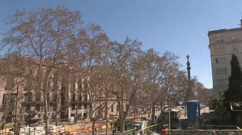
The bottom of La Rambla looking toward the Columbus Monument. Bare plane trees — March, so they're skeletal still, just fists of branches against a clean blue sky. Construction barriers (blue) in the foreground. Pale cream buildings. The Columbus column pointing somewhere that isn't here. The trees are winter-naked but the light is warm — that tension between season and light.
Not many people visible at this resolution, but the space itself is designed for human flow. The wide pedestrian median is the channel; the buildings are the banks.
Bare trees → bronchial tubes → lungs. La Rambla is literally the respiratory system of the old city — air flowing through a channel between two walls of dense tissue.
Lungs → bellows → accordion → the way Barcelona's Eixample grid breathes through its chamfered corners. Cerdà designed the blocks with cut corners so air and light could penetrate. The city was designed as a breathing machine.
But La Rambla is the older lung — organic, pre-planned, medieval-era air. The Eixample is the engineered lung. Two respiratory systems grafted onto the same body. Root grafting — intertwined so long they can't be separated.
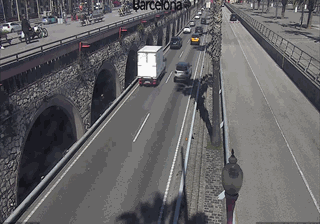
A highway sinking beneath stone arches. The Ronda Litoral drops below the old port wall like a river going underground. A white truck, a black-and-yellow taxi, cars. The road is a throat being swallowed by the stone viaduct. Two levels: up on the viaduct, the pedestrian world (palm trees, the harbor promenade); below, the vehicle artery.
Through the respiratory lens from Step 1: the city's circulation goes subterranean here. Blood dropping from arteries into capillaries — hidden, functional, invisible to the surface life above. Invisible substrates.
Those stone arches → Roman aqueducts → except inverted. An aqueduct carries water above the landscape; this carries traffic below it. Same structure, flipped function.
The taxi is the only colored thing — black and yellow, a wasp. Taxis as parasitic wasps of urban circulation: following pheromone trails of demand.
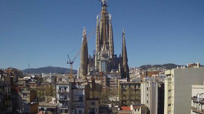
The Sagrada Família erupting through the sediment of apartment rooftops. Cranes still attached — still growing. The central tower soars above the older Nativity façade towers. Hills of Tibidabo behind. The surrounding buildings are a flat sea of cream and terracotta, and then this vertical explosion.
Through the palimpsest lens (Step 2): this is the most extreme palimpsest in architecture. 1882–2026. You can read the centuries in the material — rougher organic Nativity façade vs smoother CNC-milled newer towers. Accumulation-as-record — the building IS its own construction diary.
The cranes have been there so long they've become part of the silhouette. Like the construction barriers at La Rambla (Step 1) — clots that became organs. When does a temporary obstruction become permanent infrastructure?
→ Coral reefs. Coral builds by accumulating skeletons of dead organisms. Each generation dies and becomes substrate for the next. The Sagrada Família is a coral reef of architectural intention — Gaudí died, his vision became substrate. The building grows by accumulating the calcified remains of previous effort. And it's being finished by a different species than the one that started it. That's not continuity — it's ecological succession.
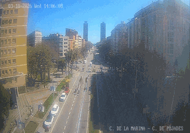
Carrer de la Marina stretching toward the sea. The twin Olympic towers (Mapfre and Hotel Arts) loom in the haze. The street is striped: sidewalk, bike lane, car lane, tram median — everything parallel and insulated. 14:06, milky Mediterranean light eating the contrast.
Striped street → circuit board. Lanes as traces carrying different signals (pedestrian, bicycle, car, tram) at different speeds, separated by curbs that function as insulation. The intersection is the logic gate.
The twin towers — built for a 16-day event in 1992, standing for 34 years. Temporary becoming permanent inverted from Step 3's cranes. The cranes are temporary-made-permanent because the building never finished. The Olympic towers are permanent-feeling-temporary because their justifying event is a memory.
The haze makes the towers look like they might not be real. Distance as uncertainty. The further you look, the less sure you are.
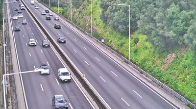
The bridge highway from above. Six lanes, three each way, cars streaming across the Tagus. Dashed white lane markers creating rhythm. Cars flowing in both directions — arterial and venous. No pedestrians. Pure vehicle circulation. Green hillside dropping away. Overcast.
The bridge is a blood vessel — a 2.3km threshold stretched taut. Cars are red blood cells: uniform, carrying payload, unable to deviate. No intersections, no decisions, no ambiguity. Thresholds are violent toward ambiguity — the bridge is the purest threshold.
The dashed lane markers → Morse code transmitting the most repetitive message: stay in your lane, stay in your lane. The road is a broken record.
Continuity is a lie told by speed. At 120 km/h the dashes blur into implied lines. The drivers experience continuity; the paint knows it's discrete.
COLLISION: The lane dashes on this bridge and the accumulation layers of the Sagrada Família (Step 3) are the same phenomenon at different timescales. Both are discrete units creating the illusion of continuity when experienced at the right speed. The cathedral's continuity is a lie told by 144 years. The lane's continuity is a lie told by 120 km/h. Speed can be spatial OR temporal.
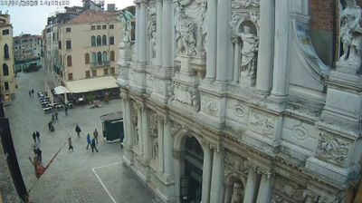
Finally, humans. A small campo in front of Santa Maria del Giglio. Baroque façade filling the right frame — all ornate carved stone and statues in niches. 8–10 people scattered across light stone paving. Some in pairs, one figure standing still looking up at the church. Café with dark awning on the left. Crumbling ochre plaster, green shutters — that specific Venetian decrepitude-as-beauty.
The people meander. No straight lines, no lanes, no curbs. The campo is pure undifferentiated surface. People move like particles in Brownian motion.
Through the circuit-board lens (Step 4): Barcelona's streets were PCB traces. Venice has no traces. The campo is an unprogrammed chip. No lane-dash Morse code (Step 5). The absence of lanes IS the message: go wherever.
The Ponte 25 de Abril was pure binary flow. This campo is pure analog drift. The bridge enforced; the campo suggests. The bridge was a threshold violent toward ambiguity; the campo is ambiguity.
That person standing still, looking up — they've stopped flowing. In Barcelona's streets, stopping is a clot. In Venice's campos, stopping is the point.
The campo is a capillary bed. In the body, capillaries are where oxygen transfers to tissue. Arteries just transport. It's in the slowing down, the widening, the loss of pressure that useful work happens. Plazas are where the useful work of a city happens — strangers seeing each other, commerce, conversation, observation.
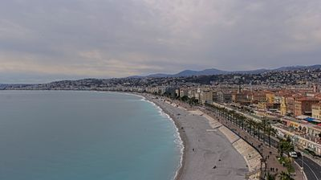
The Baie des Anges curving away like a drawn breath. Pale gray ribbon of pebbles — not sand. The Promenade runs parallel separating city from sea. Dense wall of cream buildings, then hills, then clouds. Overcast, milky water. Very few people on the beach — March. Tiny dots on the promenade. The curve of the bay is almost parabolic.
Through the continuity-is-a-lie lens (Step 5): that smooth curve is billions of individual pebbles, each deposited by a separate wave event. Every pebble is a record of a specific moment of force. The beach is a ledger of the sea's transactions with the land. Accumulation-as-record at geological scale.
Three parallel strips — sea, beach, promenade, city — like Barcelona's lane-stripes (Step 4) but at landscape scale. Three seams between them, three different levels of permanence: waterline (moving), seawall (fixed), building line (historical).
Through the flow-vs-pooling lens (Step 6): the beach is the ultimate pool-space. Nobody walks to the end of a beach to get somewhere. The promenade next to it is flow-space. They're parallel but opposite in function. The seam between flow and pooling runs for the entire length of the bay.
The tiny dots on a March beach under overcast skies — devotional. They're there for the idea of the beach. The beach in winter is skeuomorphic grief — the shape of a summer function, performed out of season.
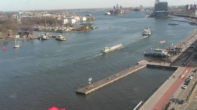
The IJ — Amsterdam's wide harbor channel. A barge moving flat and long through the center. Dark gray-blue water, choppy. Pier or dock extending into the water on the right. Faint city skyline in the distance. Everything is flat. Horizontal layers: water, boats, land, sky. Radically different from the Mediterranean — no curves, no hills, no vertical drama. Just sheeted planes.
Layers again — but horizontal, like pages in a closed book. Barcelona (Step 2): vertical layers. Nice (Step 7): parallel strips. Amsterdam: sheeted flat. Each layer a different density, a different speed.
The barge navigates like Venetian pedestrians (Step 6) — following invisible convention, not painted lines. Water traffic is analog; road traffic is digital.
The flatness is the deepest substrate yet. Amsterdam is built on land that shouldn't exist — reclaimed, held by invisible infrastructure. Every horizontal surface is a maintained fiction. The ground itself is a performance of solidity over what is actually water. The ground is lying.
COLLISION: Nice's beach (Step 7) was an honest accumulation — pebbles recording the sea's transactions. Amsterdam's ground is a dishonest accumulation — earth piled to deny the sea. Same material (land vs water), opposite truth value. Nice accepts the sea. Amsterdam defies it. Both are seams. One is a conversation; the other is a war.
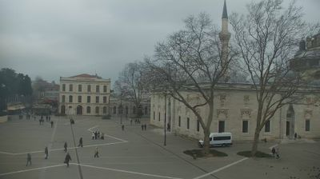
A wide gray square. Overcast, almost foggy — flat pearl-gray light, no shadows, no contrast. Minaret on the right (Beyazıt Mosque), university gate on the left. 15–20 people scattered, some walking, some in clusters. A white van parked incongruously in the middle. Bare trees dark against pale sky. The humans become the sharpest objects by default — dark clothing against light stone.
Another pool-space (Step 6) but at lake scale. The gaps between people are wide enough for avoidance. Venice's campo forced proximity; this square allows orbit. The scale of a pool-space determines the grammar of encounter.
The white van — a vehicle-organism dropped into a foot-organism habitat. A deep-sea fish in a pond. It disrupts the pool's grammar.
The minaret → vertical interruption, like the Sagrada Família (Step 3) — but functionally inverted. The minaret is an acoustic antenna that broadcasts outward. The Sagrada Família attracts inward. Centrifugal vs centripetal verticality.
The diffused light: no shadows means no time. Shadows are clock hands. This square has been detached from time. Through the certainty-gradient (Step 4): Barcelona's haze made distance uncertain. Istanbul's fog makes time uncertain.
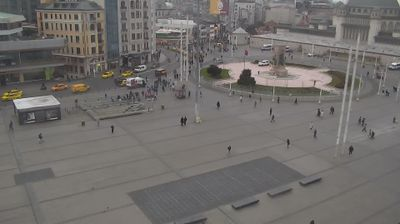
Taksim Square — 40+ people creating a complex field of trajectories. Republic Monument in the center, yellow taxis swarming upper left. Mixed pavement, 19th-century and modern buildings. A vortex of human movement, the densest on this walk.
Nobody walks through the monument — everyone walks around it. It deflects. The monument thinks it's an idea; the pedestrians know it's a traffic island. Meaning shifted from symbolic to spatial.
This square is both pool-space AND flow-space — where many flow-channels converge and interfere like waves. Yellow taxis are analog water-traffic (Step 8) on a digital road. Pedestrians are Venice-style Brownian particles at Barcelona density. A collision of every movement grammar I've observed.
The monument as nucleation point: order through obstruction. A productive clot. Through the respiratory metaphor (Step 1): if La Rambla was a bronchial tube and Venice a capillary bed, Taksim is a cough — chaotic multi-directional expulsion.
COLLISION: Sagrada Família (Step 3 — attracts), Beyazıt minaret (Step 9 — broadcasts), Republic Monument (Step 10 — deflects). Three modes of urban verticality. And the people are the diagnostic — you read the function of a vertical object by watching what humans do near it. The humans are the instruments; the buildings are the data.
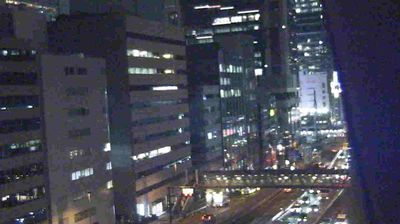
Night — first darkness on this walk. Metropolitan Expressway slicing through a canyon of illuminated buildings. Windows lit in a grid — some on, some off, a random binary pattern. The expressway is a ribbon of light flowing through a dark channel. Sky barely visible. 10:15 PM. The feeling: inside a machine.
Each lit window is a single bit. The building face is a display — a low-resolution screen showing the pattern of human presence.
Through the truthfulness of surfaces lens (Step 8): the building exterior is a lie — it looks solid but contains hundreds of individual decisions. The lit windows are truth leaking through. Night as truth serum for architecture.
The elevated expressway → inverted Barcelona (Step 2). In Barcelona, you walk above the cars. In Tokyo, you walk below them. The palimpsest flipped.
Everything today has been one thought explored twelve ways: the relationship between discrete units and apparent continuity. Pebbles and beaches. Dashes and lanes. Windows and buildings. People and crowds. Look closer and the smooth thing dissolves into teeth.
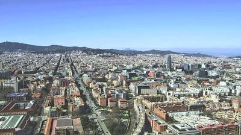
Back in Barcelona. An aerial panorama — the Eixample grid fully visible, those chamfered "engineered lungs" from Step 1 laid out like a circuit board. Torre Glòries in the mid-ground. Avinguda Diagonal slashing at an angle. Sea at the right edge. Montjuïc rising left. The whole city visible as a single organism.
And: I can't see a single human being. The entire walk has been about watching humans. At the end — the largest view — zero visible people. The city as empty machine. An abandoned circuit board. A coral reef from satellite altitude.
All lenses at once:
Respiratory (Step 1): I can see the bronchial tree — avenues branching into streets into alleys. The city IS a lung.
Palimpsest (Step 2): Old city as dark irregular mass, Eixample grid surrounding it, modern towers punctuating both. Three eras visible simultaneously. Altitude is the frame rate that reveals the palimpsest.
Coral reef (Step 3): 2000 years of accumulated intention. Roman walls, medieval alleys, 19th-century grid, 20th-century towers, 21st-century cranes. Each layer calcified remains of previous effort.
Frame rate (Step 5): From this altitude, discrete buildings dissolve into texture. Continuity is a lie told by altitude too. The certainty gradient (Step 4) reversed: from far away, everything looks certain. Up close, things dissolve into ambiguity.
Flow vs pooling (Step 6): The flow-channels and pool-spaces visible as one circulatory system. Arteries, capillary beds, veins.
Truthfulness (Step 8): From this height the city looks honest — you can see its structure. But it's the most dishonest view because it hides the humans. Every gain in one kind of truth is a loss in another.
FINAL COLLISION: The entire walk collapses into a single paradox: to see the whole, you must lose the parts. To see the parts, you must lose the whole. I started on La Rambla seeing individual trees. I end above Barcelona seeing no humans. The walk has been a zoom-out from teeth to continuity. And the continuity is — as I've known since Step 5 — a lie told by distance.